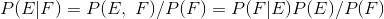
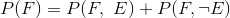
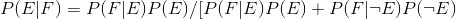
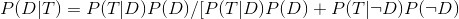
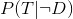
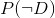
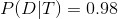

移除异常值之后的相关系数我们实际上假设了人们接受测试的概率或多或少都是随机的。如果只有表现出特定症状的人才会去接受测试，我们应该将表达式重新表达为基于事件“测试结果正常，并且表现出症状”的条件概率，这样计算出的结果会增高很多。
移除异常值之后的相关系数我们实际上假设了人们接受测试的概率或多或少都是随机的。如果只有表现出特定症状的人才会去接受测试，我们应该将表达式重新表达为基于事件“测试结果正常，并且表现出症状”的条件概率，这样计算出的结果会增高很多。6.3 贝叶斯定理
贝叶斯定理是数据科学家的最佳朋友之一，它是条件概率的某种逆运算。假设我们需要计算事件 E 基于已发生的事件 F 的条件概率，但我们已知的条件仅仅是事件 F 基于已发生的事件 E 的条件概率。两次利用条件概率的定义，可以得到下式：

事件 F 可以分割为两个互不重合的事件“F 和 E 同时发生”与“F 发生 E 不发生”。我们用符号 指代“非 E ”（即“E 没有发生”），有下式：

因此：

上式为贝叶斯定理常用的表达方式。
贝叶斯定理常常用来证明为什么数据科学家比医生更聪明。假设有这样一种病，10 000 个人中会有一个得这个病。还假设有种针对该病的测试，具有 99% 的可能性能给出正确判断（如果患病，测试显示“有病”，如果健康，则显示“无病”）。
阳性的测试结果意味着什么呢？我们用 T 表示“测试结果阳性”，用 D 表示“你患有该病”。那么，根据贝叶斯定理，如果测试结果为阳性，那么你患有该病的概率是：

我们知道，P (T |D )，即一个人测试结果为阳性并且本人实际患病的概率为 0.99。P (D )，即一个人实际患病的概率是 1/10 000=0.0001 。 ，即一个不患病的人检测结果呈阳性的概率是 0.01 。 ，即一个人实际上不患该病的概率为 0.9999 。如果将以上数据代入贝叶斯定理，可得：

结果表示，测试结果为阳性的人实际患病的概率不到 1%。
对于数据科学家来说，这是小菜一碟，但大部分医生会猜测 P (D |T ) 的值接近 2。
一个更直观的计算方式是，首先假设总体包括 1 百万个人。你预期其中 100 个人患有该病，而这 100 个人中会有 99 个测试结果显示阳性。另一方面，你认为 999 900 个人不患有该病，其中 9999 个人测试结果呈阳性。这意味着在（99+9999）个测试结果呈阳性的人中，你认为仅有 99 个人实际上患有该病。